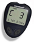

| Meter | Multisite | Sample Size | Test Time | Memory | Strips | Software | |
| Control AST |  | Yes | 1.0 microliters | 5 secs | 250 test | Control Test Strips | Yes |
| EasyGluco |  |
Yes | 1.0 microliters | 9 secs | 200 test | EasyGluco Test Strips | Yes |
| EasyGluco G2 |  |
Yes | 1.0 microliters | 9 secs | 200 test | EasyGluco Test Strips | Yes |